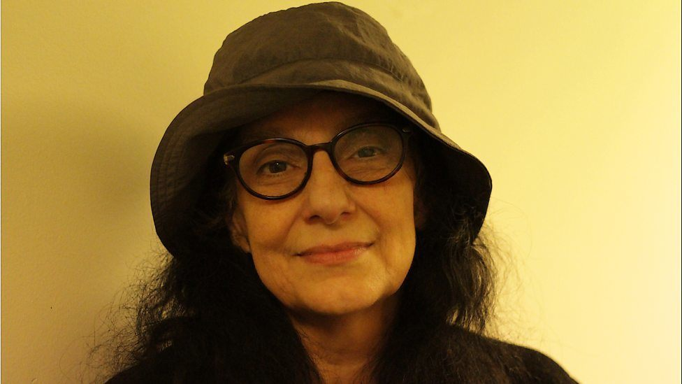
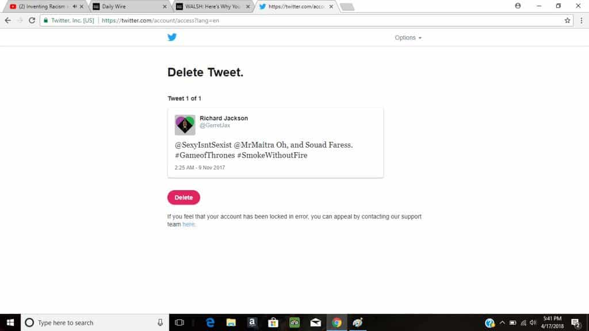

Twitter has suspended dozens, if not hundreds of its users’ accounts for mentioning a notorious false rape accuser. Most of these tweets were around two years old. Unlike her victim, Souad Faress has never been prosecuted and will never serve a single day in jail for her false accusation. Roosh and I are just some of the individuals to have been sent to the Twitter doghouse for talking about her. In early 2016, I also wrote about Faress and the Kafkaesque situation she spawned for an innocent and exonerated man.
Some called it the most ridiculous and malicious false rape accusation of all time. Mark Pearson, walking in one of London’s busiest Tube (subway) stations, found himself accused of digitally raping a senior citizen, Faress. The now 70-year-old professional actress had appeared in a season of Game of Thrones. Nevertheless, her best performance was to British police and in a British court, which unfortunately had to grant her lifetime anonymity.

Souad Faress’ victim, Mark Pearson.
A jury obviously found Mark Pearson not guilty of sexual assault, but not before he was humiliated by being arrested, charged, and prosecuted for something that never happened. His financial losses (loss of time, work, and money spent on lawyers and psychologists) were considerable as well and remain so. It is Pearson who has faced all the negative consequences of Souad Faress’ attention-seeking, not Faress herself.
As was published a couple of years ago, the Crown Prosecution Service (CPS) deliberately, unprofessionally, unconscionably, and arguably corruptly slowed down the recording of Mark Pearson as he passed Souad Faress, to make it look like he could have sexually assaulted her. But should we be surprised? No.
In recent times, other victims of the British judicial system have included Liam Allan, whose innocence in a “rape” case was suppressed by an incompetent and/or vindictive police detective. With quotas for rape “convictions” being the norm in Western societies, Pearson and Allan will certainly not be the last men sacrificed to appease rabid feminists.
Is Souad Faress trying to scrub her online presence?

Scrub away, Souad Faress!
The crackdown on mentioning Souad Faress on Twitter reeks of a meticulous and long-term effort to salvage her public reputation. Ironically, barely a fraction of Britain knows she defamed Mark Pearson with proven lies, but even that fraction is enough to terrify her.
It is highly likely that Faress’ “agent” or even lawyers have approached Twitter and possibly Google (information about her false rape accusation is appearing lower and lower in search results). After some sort of “process,” if we can call it that, tech employees have sided with her and begun to purge references to the false rape accusation.
Many users, like Richard Jackson, wrote nothing out of the ordinary about Souad Faress and were actually being highly favorable to her, given her unforgivable actions. Regardless, they found themselves suspended:

Tweets like mine were actually the “vicious” ones (more like, “viciously accurate”):
Hey @Cruella1 Does me naming malicious false rape accuser @SouadFaress tingle your feminist sensitivities? https://t.co/3siAlknREx
The dangers of tech companies and information suppression are real

We are in serious danger of losing access to information vital to the proper functioning of our societies and legal systems, such as news pertaining to those who lie about rape (with CCTV evidence to prove they are lying). Because some 85% of digital advertising revenue goes to Facebook and Google alone (and much of the rest to companies like Twitter), only a few levers need to be pulled to hide potentially viral news that upsets the highly sensitive. The financial power of only a handful of business concerns should alarm all of us greatly.
Sadly, miscreants like Souad Faress will always be able to rely on sympathetic ears and very helping hands at places like Twitter and Google. Her hamstering, believing she is a victim of online “bullying” after trying to get a man jailed on a lie, evidently knows no bounds. But what else can we expect from an attention-starved and presumably feminist old woman? I don’t feel sorry for her at all–I feel sorry for the real victim in the saga she created, Mark Pearson.
Read More: Game Of Thrones Actress Souad Faress Falsely Accuses Man Of Rape For Walking Past Her